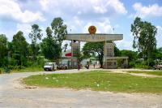
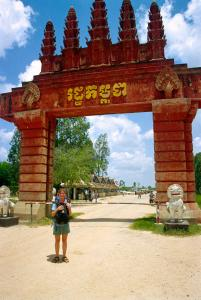
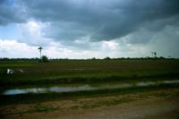
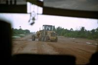
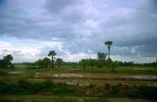

|
Dimanche 15 juillet
Le bus possède des sièges trop hauts pour que nos pieds touchent terre. Tu
parles d'un confort. Mais la clim' fonctionne et la route vietnamienne qui nous
amène à la frontière est plutôt agréable. Il nous faut environ deux heures pour
y arriver. Ensuite, c'est la douane. Papiers, tampons côté vietnamien. Un peu
de marche et 100 mètres plus loin, papiers, tampons cambodgiens à un premier
poste de contrôle, plutôt classique. Deuxième poste à quelques mètres, et une
déclaration sur l'honneur qu'on n'est pas infecté, qu'on n'a ni diarrhée ni
maladie cachée. Même que ça s'appelle le service de quarantaine. Au troisième
poste, un douanier est sensé vérifier cette déclaration et regarder notre certificat
de vaccination. Mais il ne peut pas, il est occupé à décarcasser une cuisse
de poulet et à finir son assiette de riz... "Bon appétit"... "What is it?" m'interroge-t-il
ne connaissant visiblement pas l'expression que je pensais internationale. "Have
a good meal". "Ah, OK, you can go". Ca y est, on est au Cambodge.
A perte de vue, c'est plat. Quelques arbres à palmes très hauts, des rizières
en culture, beaucoup en jachère, des vaches à bosse et des buffles, et de l'eau,
beaucoup d'eau où se reflète le ciel. C'est beau et on a le temps d'admirer
le paysage vu qu'on fait du 10 kilomètres à l'heure. La route est constituée
de davantage de nids de poules - voir d'autruches vu la taille - que de bitume
(quand il y en a...) et à force d'être secouée, la porte du bus sort de plus
en plus de ses gonds. Pendant ce temps, on rebondit bien haut sur les sièges,
c'est épuisant, ça casse le cou, mais qu'est ce que c'est rigolo. Pour le moment,
le pays est peut-être vachement plat, mais pas la route... Les travaux sont
en cours.
Partout, des paysans, hommes, femmes, enfants. Ils nous regardent le sourire
aux lèvres et agitent la main. Il pleut. Déjà, même les douaniers étaient aimables
et souriants, et aussi notre chaufffeur, et la famille du resto où on s'est
arrêté déjeuner. Le cambodge a tout l'air d'un pays fort accueillant. Des oies,
des canards, des poules, des cochons, des maisons de bois sur pilotis, et des
gens partout. Et au milieu, construite sur une digue (on comprend pourquoi quand
on voit toute cette eau!), la route.
On voit nettement qu'on a quitté le Vietnam. Déjà, le paysage est très différent.
Si 75% de la surface du Cambodge était recouverte de forêt dans les années 60,
il n'en restait que 43% en 1993, dont la moitié de forêts primaires. C'est au
point qu'ils ont dû annuler de juteux contrats, non pas pour raison écologique,
mais faute de bois à couper. A la différence du Laos, du Vietnam ou de la Thaïlande,
on trouve d'immenses surfaces déboisées ici, et surtout, ce qui choque le regard
et l'esprit, c'est qu'elles ne sont, pour la plupart, pas utilisées pour la
culture. C'est du déboisement pour l'argent, pour financer le passage à l'économie
de marché comme on dit, et pour remplir quelques poches. Le contrôle des matières
premières est même passé entre des mains étrangères indéterminées. Le monde
a besoin de bois et certains politiciens verreux cambodgiens ont désormais des
comptes en banque bien remplis...
Le pays semble beaucoup plus pauvre que le Vietnam. Ca se ressent même dans
les campagnes. Les routes sont en très mauvais état et sont boueuses et poussièreuses.
Les habitations sont beaucoup moins souvent en dur. Ici, torchis et bois sont
très nettement majoritaires. Mais n'oublions pas que le Cambodge sort tout juste
d'une horrible guerre civile. Ca laisse des traces. Déjà de grands travaux semblent
entrepris pour le réseau routier (c'est pas du luxe). Mais le gouvernement a
beaucoup à faire, sa première tâche est de désarmer le pays!
Les habitants sont physiquement bien différents des vietnamiens, moins orientaux,
des têtes plus larges, moins élancés, une peau plus foncée, presque un type
indien (d'Inde, pas d'Amérique...) Et surtout, ici, pas de chapeau conique,
mais un foulard "entassé" sur la tête!
Même organisation qu'au Vietnam: un petit gars monte dans le bus pour vendre
son hôtel. Il ne manque pas de nous mettre en garde contre l'insécurité (vols
à la tire et à main armée) dans Phnom Penh, et en particulier dans les autres
quartiers que celui de son hôtel. Et même surtout là où sont situés les concurrents
bon marché. Même que sa mère s'est fait voler son porte-monnaie là-bas récemment!
L'est gonflé quand même, dans le guide (qui ne ment jamais bien sûr) ils conseillent
d'éviter sa guesthouse pour cause de lieu de perdition et de quartier mal famé...
Mais bon, il termine son discours (dans un anglais aussi chaotique que la route)
par "je vous aime, c'est pour cela que je vous dit ça...". Ce qui soulage le
Chtit Lolo qui croyait que c'était pour toucher une commission!
Au Vietnam, c'était foot, badminton et billard français. Ici, c'est volley
et billard américain.
Suite du voyage : Phnom Penh - premier contact
|

Vietnam
Moc Bai
|

Vietnam
Moc Bai
|

Cambodge
Bavet
|

Cambodge
Bavet
|

Cambodge
Bavet
|
|
|